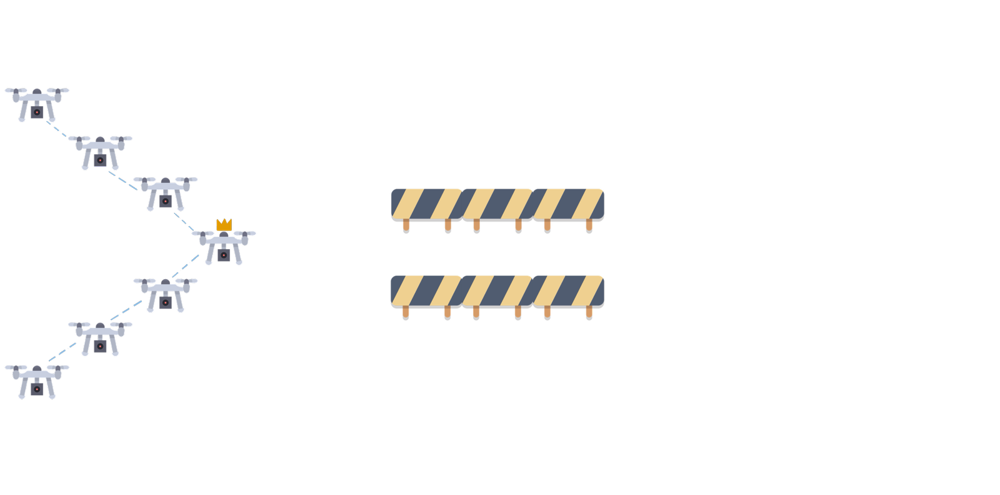
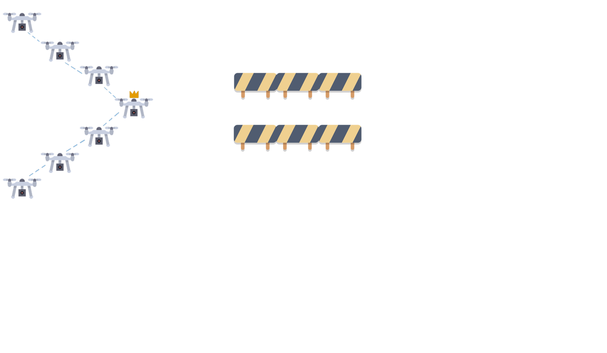
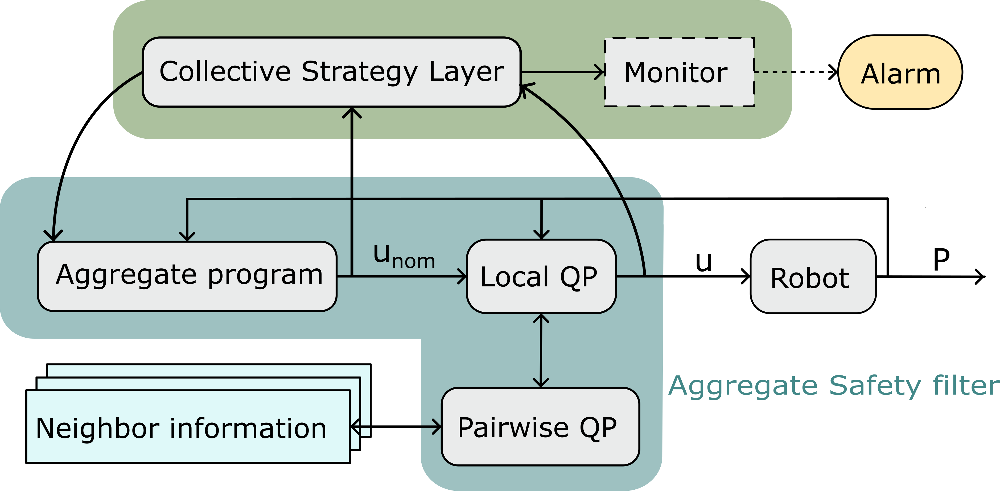
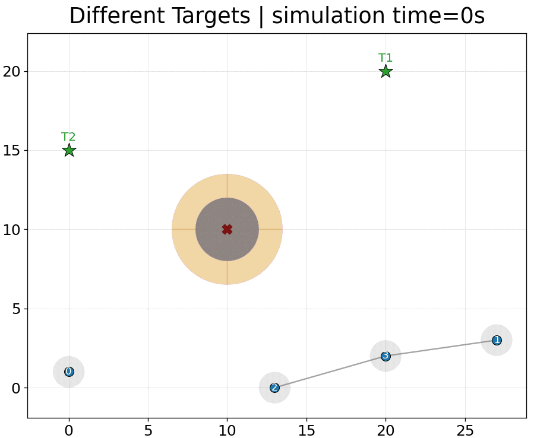
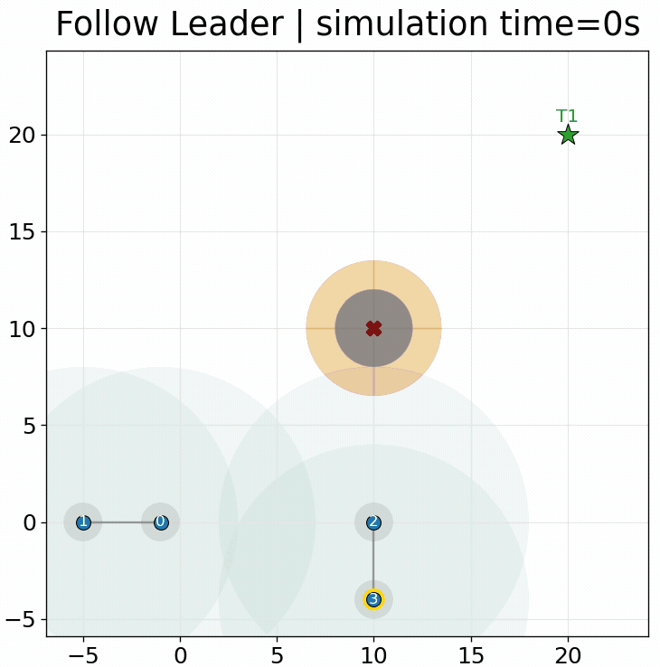
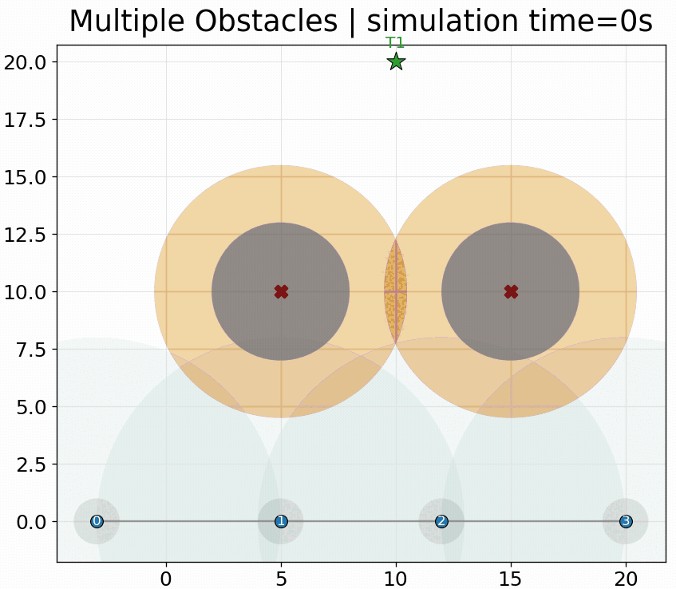

Toward Safe Aggregate Computing: A Distributed Control-Theoretic Safety Filter for Robot Swarms
Angela Cortecchia1, Alessandro Papadopoulos2, Danilo Pianini1
*1 Department of Computer Science and Engineering (DISI)
Alma Mater Studiorum – University of Bologna - Cesena, Italy
*2Department of Computer Science and Engineering
Mälardalen University, Västerås, Sweden


Safe adaptation in robot swarms
Collective strategies must respect physical constraints during execution
In search and rescue or environmental monitoring, a swarm must reach its goal — and stay safe on the way.

the group splits to get through: links break

what we want: around the obstacle, still connected
We need both an expressive way to specify collective behavior and a mechanism that enforces safety during execution.
Aggregate Computing
Programming the collective, not each robot

Aggregate Computing raises the programming abstraction from individual devices to collective behavior.
Developers compose computational fields: distributed values that evolve through local interaction across the network.
One global program is executed locally by all robots through repeated neighbor-to-neighbor interaction.
How AC executes
Sense → compute → communicate / act
Each robot repeatedly:
Senses local inputs and the latest messages from neighbors.
Computes the aggregate program using local state and neighbor information.
Communicates / acts by sharing the updated state and applying the local output.
Round-based model
Global self-organizing behavior emerges from repeated local interaction.
The limitation: self-stabilization is eventual
Convergence is guaranteed, but only in the limit
AC building blocks are self-stabilizing: under stable inputs and topology, the swarm recovers from transient faults.
But the guarantee is eventual — a stable state is reached after an indefinite number of rounds.
Meanwhile the program keeps adapting, with nothing enforcing physical constraints at every instant.
For robot swarms, eventual convergence is not enough: safety must also hold before convergence.
The safety layer
The aggregate command is filtered, not replaced

Collective strategy and physical safety stay modular: AC commands are filtered, not replaced.
Control functions for convergence and safety
One score for progress, one score for danger
V scores how far the robot still is from its goal. The controller must keep pushing that score down, toward zero.
h scores how much safety margin is left. The controller must never let that score reach zero.
CLFs encode what should happen; CBFs encode what must not.
Minimization Problem
As close as possible to the nominal command, without entering the unsafe region
Stay as close as possible to the aggregate command, but never violate active hard safety constraints.
What can be enforced?
The active constraints depend on the collective task being executed.
Distributed safety constraints

Local constraints
- target convergence;
- obstacle clearance;
- speed limits.
Pairwise constraints
- inter-robot collision avoidance;
- selected communication-link preservation.
Pairwise constraints expose the distributed structure of the problem.
Proof of concept
Collektive specifies the aggregate behavior → Alchemist simulates the swarm → Gurobi solves the QPs
This is a proof of concept: the goal is to validate the architecture, not yet to provide a scalability benchmark.
Scenario 1: different targets

Different nominal goals, shared safety constraints: robots reach their targets while avoiding obstacles and collisions.
Scenario 2: leader election and connectivity

The aggregate strategy adapts when clusters merge, while the safety filter preserves selected communication links.
Scenario 3: when safety reveals a strategy limit

The filter correctly blocks unsafe motion, but a direct target policy can get trapped in a local minimum.
Conclusions and future work
Takeaways
Aggregate Computing specifies adaptive collective behavior at a high level.
CLF/CBF filtering makes convergence and safety requirements explicit before actuation.
Distributed optimization exploits local and pairwise structure through neighbor exchanges.
Future work
Quantitative evaluation
Measure convergence time, scalability, and communication overhead.
Complex collective behaviors
Explore formation control, flocking, and coverage.
Dynamic policies for target convergence
Handle local minima and improve adaptability in complex environments.
Safe Aggregate Computing keeps self-organization programmable while enforcing transient safety.
Thank you for the attention!
Reproducible experiments here:

angelacorte/experiments-2026-acsos-ws-carol